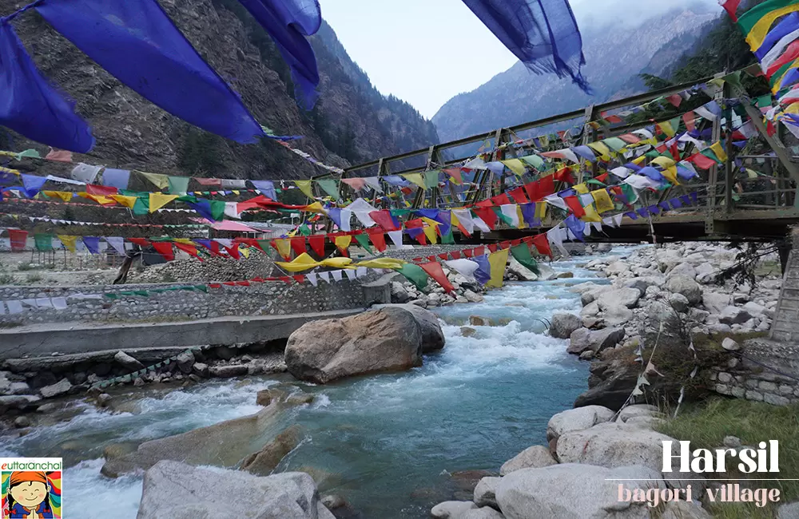
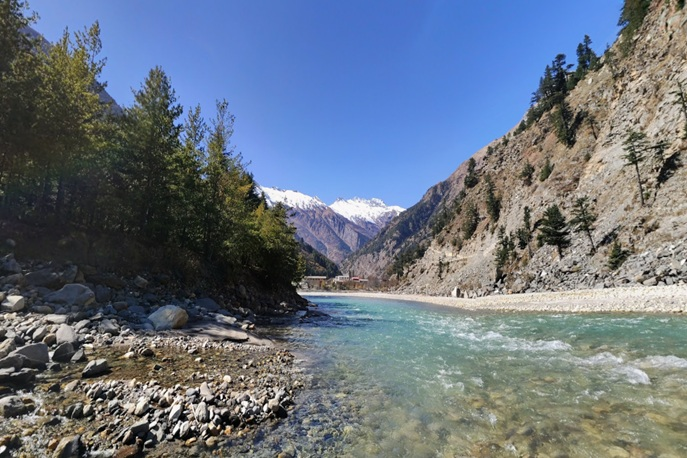
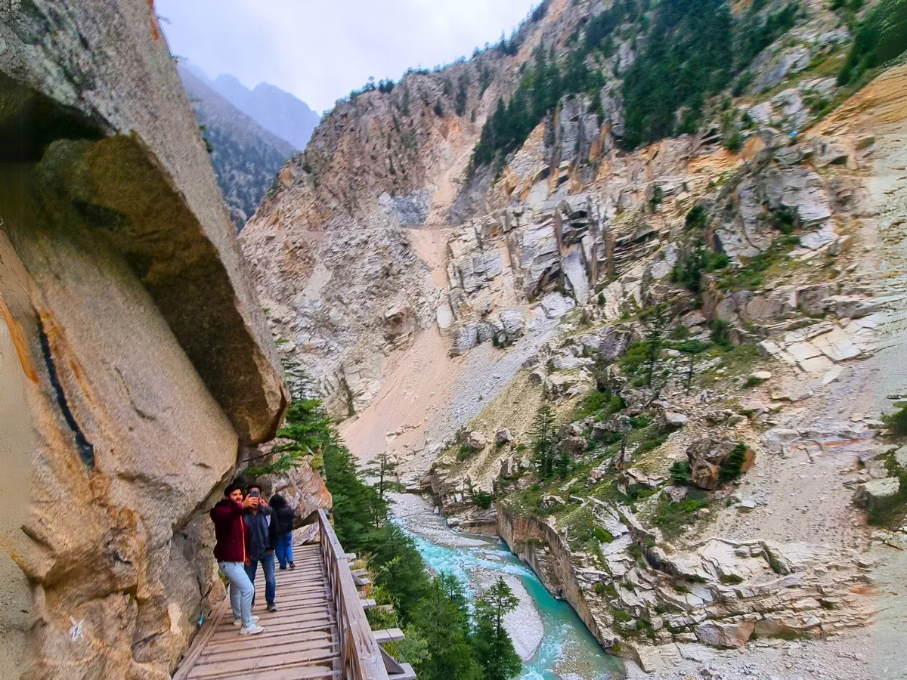
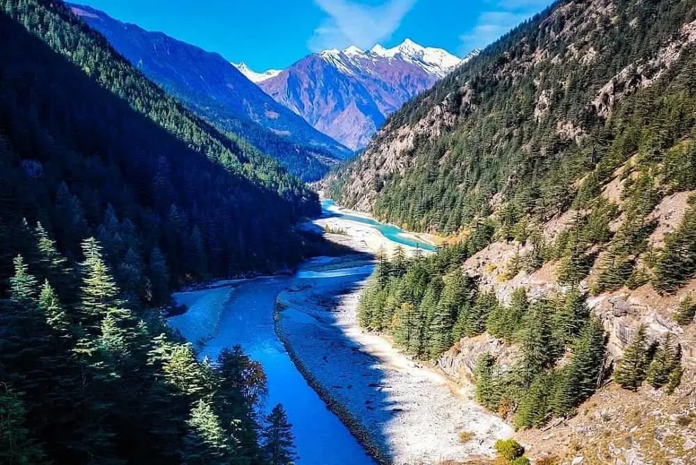
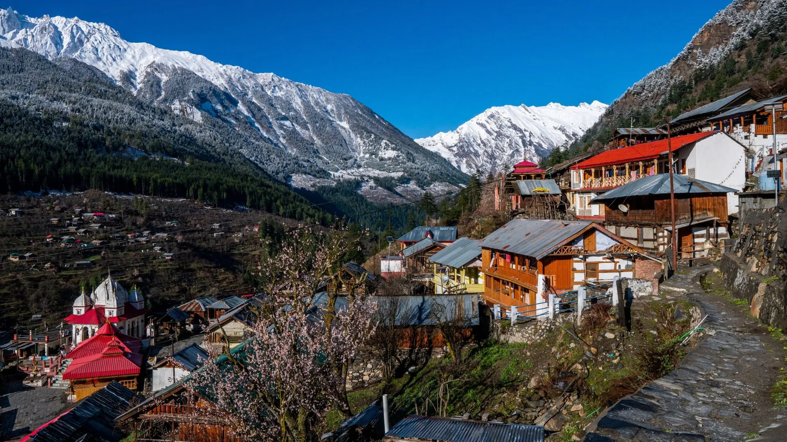
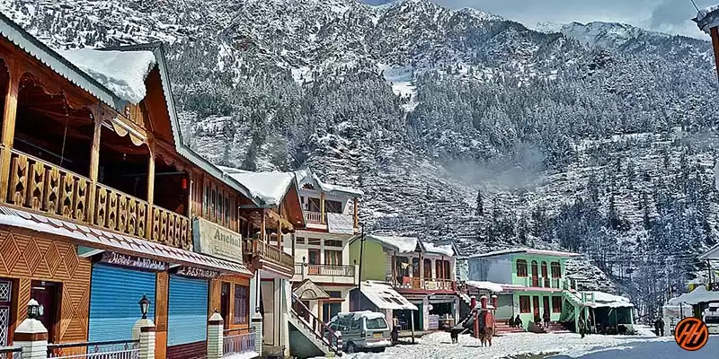

Harsil Valley, nestled in the Uttarkashi district of Uttarakhand, is a breathtaking Himalayan retreat known for its untouched beauty, dense pine forests, and the soothing flow of the Bhagirathi River. Located at an altitude of around 2,620 meters, this peaceful valley is often considered one of the most scenic and less crowded destinations in the Garhwal Himalayas. Surrounded by snow-capped peaks, apple orchards, and traditional wooden houses, Harsil offers a perfect escape from the chaos of city life. The valley gained historical significance when it became a stop on the route to Gangotri Dham and is also associated with local legends and folklore that add to its mystical charm.
Known as the "Mini Switzerland of India," Harsil is famous for its natural landscapes, crystal-clear rivers, and peaceful ambiance that makes it ideal for nature lovers, photographers, and spiritual seekers alike. The nearby villages like Dharali and Mukhba showcase traditional Himalayan culture, while the surrounding trails offer opportunities for trekking and exploration. Whether it’s walking through apple orchards, sitting by the riverside, or witnessing snowfall in winter, Harsil Valley provides a magical experience where nature speaks in silence and every moment feels timeless.
April to June offers pleasant weather (10–20°C), blooming orchards, and clear views of the Himalayas. September to November is perfect for crisp air, post-monsoon greenery, and fewer tourists. Winters (December–February) bring heavy snowfall, turning Harsil into a white paradise but may affect accessibility.
Explore Harsil Valley landscapes, visit Dharali and Mukhba villages, riverside relaxation near Bhagirathi, apple orchard walks, short treks in surrounding hills, photography of snow peaks, and experiencing peaceful Himalayan village life away from crowds.
Carry warm clothes even in summer (weather changes quickly), book stays in advance during peak seasons, respect local culture and nature, avoid littering, keep cash handy (limited network/connectivity), and travel cautiously during winter due to snow-covered roads.
"In the silent embrace of Harsil Valley, where rivers whisper through pine forests and snow peaks guard the horizon, one finds a rare peace — a place where time slows down, the soul breathes freely, and nature reveals its purest form of beauty."